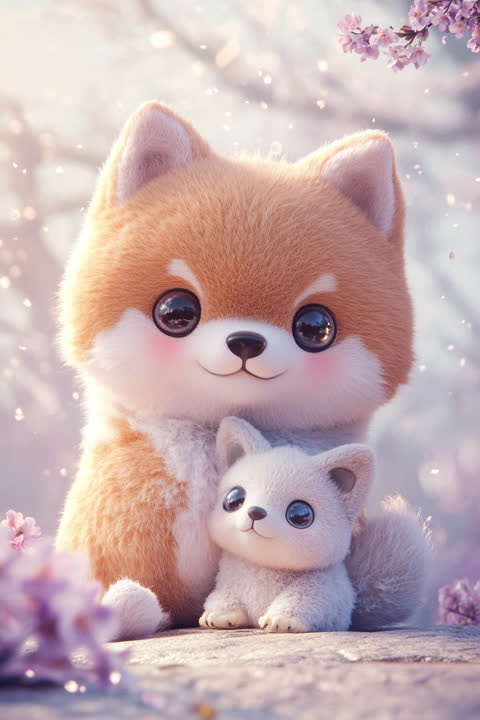

「気づいたら支えてる柴犬」タイプの五行は「土」の気質、ラッキーカラーは黄土色。
誰かが困った顔をする0.5秒前に気づいて、もう動いている。そんな察知能力の持ち主です。「大丈夫?」と聞く前に温かいお茶を差し出せるタイプで、記念日も好みも、頼まれてもいないのにちゃんと覚えています。ただ、その優しさは「断るのが苦手」という弱点とセットで、気づけば自分の予定表が他人の用事で埋まっていることも。それでも「困ったときはあの人」と真っ先に名前が挙がるのは、あなたの誠実さが本物だからです。占いの視点では、あなたは五行でいう「土」の気質を持つタイプ。黙って周りを支える、大地のような属性です。ラッキーカラーは黄土色。【意識するといいこと】「今日は無理」と言っても嫌われません。自分の希望を口にする練習を、少しずつ始めてみましょう。
「そういえば前に言ってたあれ」を、ちゃんと覚えていて差し出せる人です。大げさな告白より、寒い日にそっと手渡す温かい飲み物のような愛し方をします。相手の喜ぶ顔が自分へのご褒美になるタイプですが、その優しさゆえに、自分の疲れや小さな不満はつい後回しにしがちです。恋愛運の面では、「土」のエネルギーが、じっくり育てた信頼ほど強くなる絆を暗示しています。開運アクションは、公園など土や緑に近い場所で過ごす時間を増やすこと。【意識するといいこと】尽くし切って空っぽになる前に、「実はこうしてほしい」を伝えてみて。あなたの本音は、相手にとって迷惑ではなく喜びです。
新人が困っている、備品が切れかけている、あの人が今日少し元気がない——チームの「小さな異変」に一番早く気づくのがあなたです。目立つ席よりも、みんなが気持ちよく働ける状態を裏で支える役回りにやりがいを感じるタイプ。ただ、停留所を増やしすぎて自分の積載量を超えてしまいがちなのが玉に瑕です。仕事運の面では、「土」のエネルギーが、地道な支えを確かな信頼へ変えていく暗示。開運アクションは、デスク周りを整理整頓すること。【意識するといいこと】「今は乗せられません」と言う勇気も、安全運行のうち。断ることは、あなたの価値を下げません。
看護師・医療事務、保育士、カスタマーサポート、人事・総務など、「誰かの困りごとに先回りする力」が直接評価される仕事に向いています。派手さより着実さが信頼される現場で、あなたの記憶力と気配りは替えの利かない戦力になります。
次の一歩は「やったことを言葉にして残す」ことです。あなたの支えは自然すぎて、周りに「あって当たり前」と思われがち。黙って動くだけでなく、日報や共有の場で自分の対応を淡々と可視化すると、正当な評価と適切な業務量の両方が手に入ります。もうひとつは、頼まれごとに即答せず「一晩考えてから返事する」を標準にすること。断る練習というより、引き受けるかどうかを選ぶ時間を自分に許す練習です。それだけで疲弊がぐっと減ります。
この診断では、性格・恋愛・仕事の3ブロックをそれぞれ独立して判定しています。3つとも同じISFJになるとは限りません——あなたの本当のタイプを、無料の3分診断で確かめてみませんか?